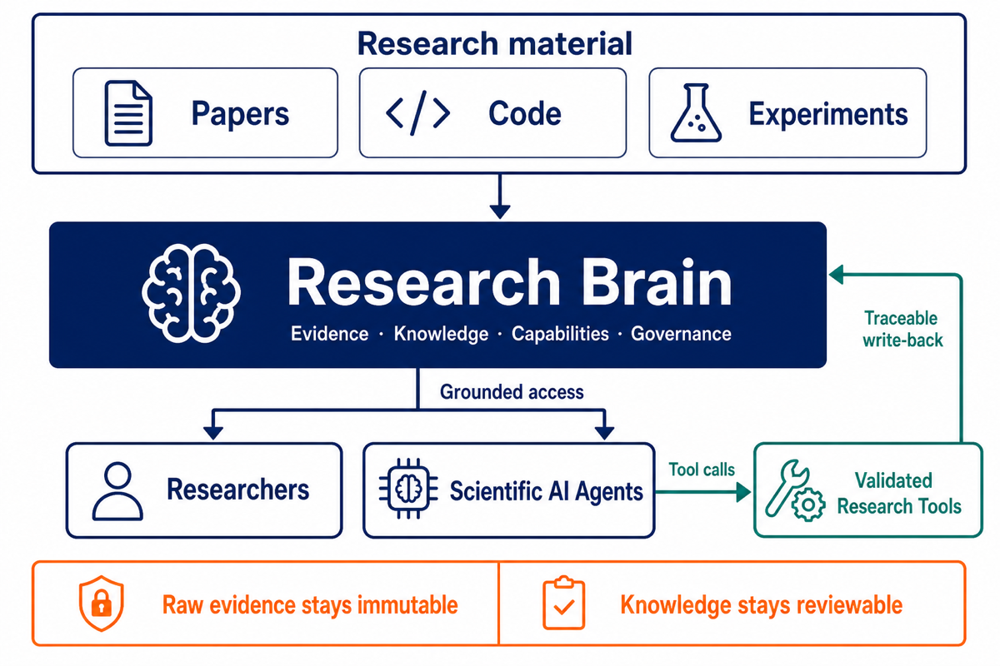
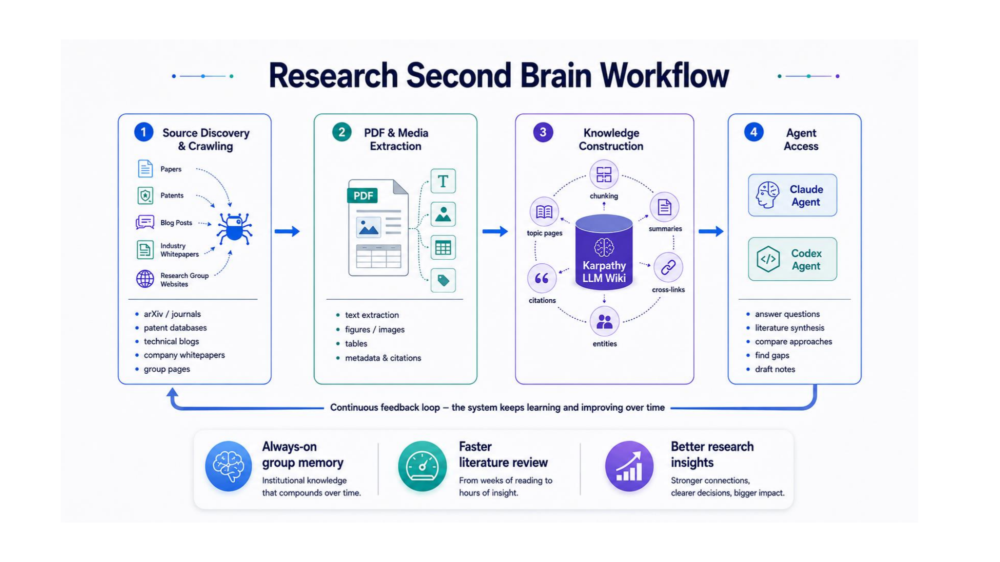
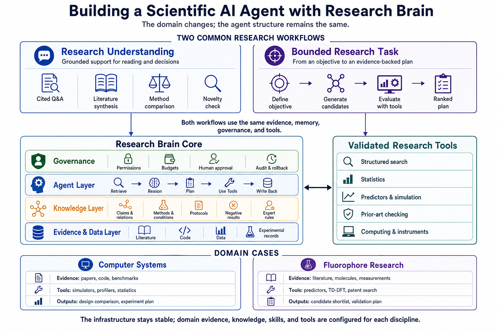

Research Brain
A provenance-preserving information infrastructure for shared and automated research.
Research Brain is an agentic AI infrastructure that helps researchers and scientific agents reuse knowledge from papers, code, experiments, and previous projects. It continuously collects research material, preserves the original evidence, and organizes claims, methods, protocols, negative results, and group experience as shared research memory. Scientific agents can then answer questions, compare methods, check novelty, and run validated tools with traceable evidence and human approval. The goal is to make computer systems research, and later other research disciplines, faster, more reproducible, and easier to hand over across people and projects.
Gao Bin · School of Computing, NUS

Scientific agents need a reliable research substrate, not just a stronger model.

Prepare research information once. Keep its meaning and provenance intact.
This preparation layer converts discovered material into reusable evidence and maintainable domain knowledge, so later agents do not repeatedly parse the same corpus.

One stable architecture, configured for different research domains.
Computer systems and fluorophore molecular research use the same Research Brain structure; only their domain evidence, knowledge, skills, and validated tools change.

One institutional Research Brain, serving multiple research groups and AI services
Public research material is prepared once and reused. Private data and active work remain isolated in authorized group workspaces.